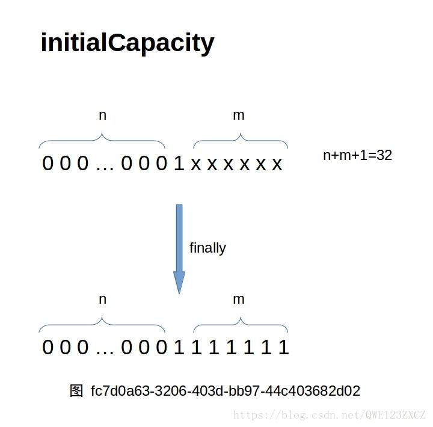
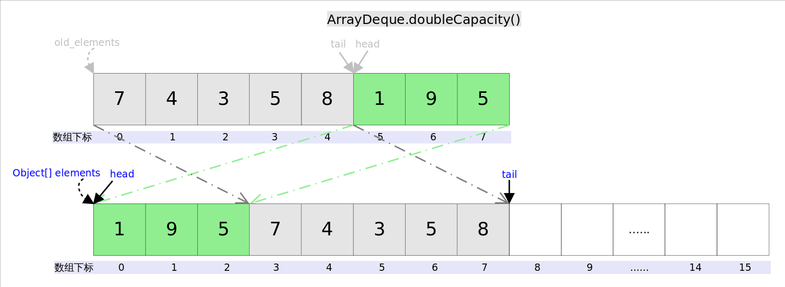

概述
Deque, 即“double ended queue”，表示双向队列，它既可以当作队列使用，也可以当作栈使用。ArrayDeque和LinkedList是Deque的两个通用实现，但是官方更推荐使用AarryDeque用作栈和队列。
ArrayDeque底层通过数组实现，为了满足可以同时在数组两端插入或删除元素的需求，需要设置head指针和tail指针，head指向首端第一个有效元素，tail指向尾端第一个可以插入元素的空位。也就是说ArrayDeque底层实现是一个循环数组（circular array），并且数组的任何一点都可能被看作起点或终点。
ArrayDeque是非线程安全的，另外该容器不允许放入null元素。

ArrayDeque实现
底层数据机构
1 | /** |
由注释总结得出以下几点重要信息：
- 最小初始容量为8，并且自动扩容后数组的大小永远是2的幂。
- 数组永远不能满，以避免head和tail指针相等。
- 数组元素不能为null。
构造函数
1 | public ArrayDeque() { |
由源码可知：
如果不指定容量创建ArrayDeque，默认数组大小为16。
如果指定容量大小，构造方法会调用
static int calculateSize(int numElements)计算最合适的2的幂来创建数组。若指定容量小于MIN_INITIAL_CAPACITY8，则直接创建大小为8的数组；若指定容量大于等于8，则会通过以下代码块来获得大于指定容量的最小2的次幂数。1
2
3
4
5
6
7initialCapacity = numElements;
initialCapacity |= (initialCapacity >>> 1);
initialCapacity |= (initialCapacity >>> 2);
initialCapacity |= (initialCapacity >>> 4);
initialCapacity |= (initialCapacity >>> 8);
initialCapacity |= (initialCapacity >>> 16);
initialCapacity++;>>>为无符号右移运算，以8为例，其二进制数为000…01000共32位，后面简写为1000。8 >>> 1后则为0100，相当于除以2的1次幂；8 >>> 2后则为0010，相当于除以2的2次幂…|为按位或，两数按位或，对应位只要有一个1该为结果即为1。那么以initialCapacity等于8为例：
1
2
3
4
5ini >>> 1, 得0100；1000 | 0100 得 ini =1100
ini >>> 2, 得0011；1100 | 0011 得 ini =1111
ini >>> 4, 得0000；1111 | 0000 得 ini =1111
ini >>> 8, 得0000；1111 | 0000 得 ini =1111
ini >>> 16, 得0000；1111 | 0000 得 ini =1111最后结果为16。
1
2
3
4
5initialCapacity |= (initialCapacity >>> 1);
initialCapacity |= (initialCapacity >>> 2);
initialCapacity |= (initialCapacity >>> 4);
initialCapacity |= (initialCapacity >>> 8);
initialCapacity |= (initialCapacity >>> 16);实际上，以上代码块的作用是将initialCapacity 的最高位1的所有低位全部变为1，如下图所示：

5次操作后再进行自加，就会得到大于initialCapacity的
最小2的次幂数。有一个特殊情况需要处理，即initialCapacity的最高位1是在第31位上：
01XXXXXX XXXXXXXX XXXXXXXX XXXXXXXX
这样在进行所有操作后initialCapacity会变为：
10000000 00000000 00000000 00000000
最高位为1，实际上就上溢为一个负数(-2^31)(32位整型范围为-2^31 ~ 2^31 - 1)。为了处理这种情况，会将initialCapacity右移一位，这样它就变为了一个很大的整数（2的30次幂）。
参考：https://blog.csdn.net/liubin119712/article/details/51075861
使用集合元素创建ArrayDeque调用的addAll()方法实际上继承自父抽象类AbstractCollection
的，因为ArrayDeque没有重写该方法。 1
2
3
4
5
6
7public boolean addAll(Collection<? extends E> c) {
boolean modified = false;
for (E e : c)
if (add(e))
modified = true;
return modified;
}然后addAll中的add方法为ArrayDeque重写的add方法。
扩容：doubleCapacity方法
ArrayDeque的自动扩容发生在head == tail的情况下，此时直接扩容为原来的两倍。int newCapacity = n << 1;。

1 | /** |
addFirst

1 | public void addFirst(E e) { |
因为tail指针总是指向下一个可插入的空位，也即在进行任何添加元素的操作时，总会有空位，所以不需要考虑空间问题。
head = (head - 1) & (elements.length - 1)：这段代码在head不为0时，相当于求模运算，但是效率比使用%高。因为数组的大小永远是2的幂，所以elements.length - 1是011..11（32位）的形式，任何非负整数（且 <= len-1）和它按位与都会等于其本身；而在head为0时，head-1则为-1，其二进制源码为1000...01（32位），由于计算机运算使用补码，-1的补码则为除符号位外全部取反后+1，为1111...11（32位），那么它和elements.length - 1按位与的结果就是elements.length - 1本身，也就是在数组末尾插入。
addLast
1 | public void addLast(E e) { |
(tail = (tail + 1) & (elements.length - 1)相当于求模运算。
pollFirst
1 | public E pollFirst() { |
pollLast
1 | public E pollLast() { |
peekFirst
1 | public E peekFirst() { |
peekLast
1 | public E peekLast() { |
参考：https://www.pdai.tech/md/java/collection/java-collection-Queue&Stack.html